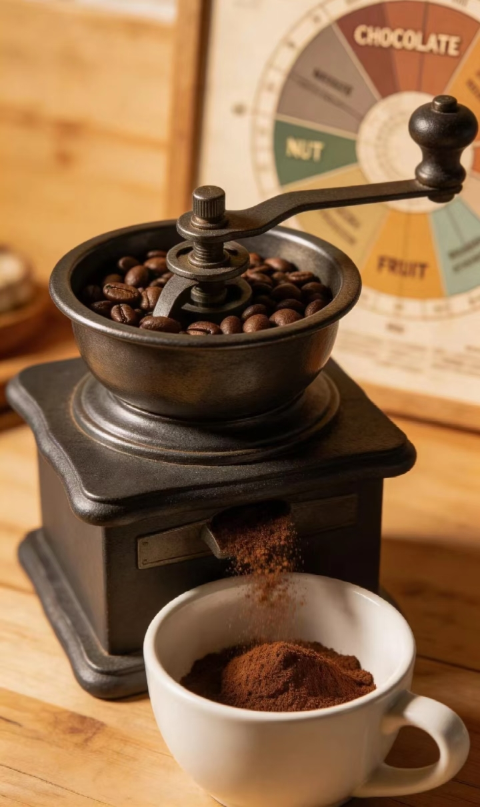

咖啡豆研磨技巧 - 粗细决定风味
← 返回首页
为什么研磨如此重要？
研磨粗细直接影响咖啡的萃取效率和风味表现。研磨过细会导致过度萃取，咖啡苦涩；研磨过粗会导致萃取不足，咖啡寡淡无味。不同的冲煮器具需要不同的研磨度。
研磨度分类与对应器具
| 研磨度 | 描述 | 适用器具 | 萃取时间 |
|---|---|---|---|
| 极细研磨 | 类似面粉 | 土耳其咖啡壶 | 2-3分钟 |
| 细研磨 | 类似细沙 | 意式咖啡机 | 25-30秒 |
| 中细研磨 | 类似食盐 | 手冲壶(V60)、滴滤壶 | 2-3分钟 |
| 中研磨 | 类似白糖 | 法压壶、虹吸壶 | 4-5分钟 |
| 粗研磨 | 类似粗盐 | 冷萃咖啡、美式滴滤 | 12-24小时 |
研磨技巧与注意事项
- 💡 现磨现用：咖啡豆研磨后香气会快速流失，建议在冲煮前1分钟内研磨
- 💡 均匀度优先：选择优质磨豆机，避免研磨颗粒大小不一
- 💡 调整原则：萃取不足（淡）→ 调细研磨度；过度萃取（苦）→ 调粗研磨度
- 💡 清洁保养：每次使用后清洁磨豆机，避免不同咖啡豆风味交叉污染
新手磨豆机推荐
入门级：手摇磨豆机（百元左右，适合单人使用）
进阶级：电动锥刀磨豆机（300-500元，研磨均匀度更好）
专业级：电动平刀磨豆机（1000元以上，适合咖啡发烧友）